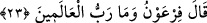
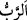
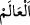
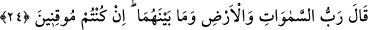

23. Fir’avn şöyle dedi: “Âlemlerin Rabbi dediğin de nedir?”
“
” terbiye eden/yetiştiren, mevcûdâtın maslahatını tekeffül eden/üzerine alan
demektir. “
” Allah Teâlâ dışında olan cevher ve ârâzların ismidir. Yâni Fir’avn
âlemlerin kendisinden başka bir ilâhı olduğunu inkâr ederek: “Rasûlü olduğunu iddiâ
ettiğin âlemlerin Rabbi nedir? Onun kendine özel hakîkati nedir? O hangi cinstendir?”
diye sordu.
Kâşifî der ki: “Fir’avn, Musa aleyhisselâm’ın “Ben âlemlerin Rabbinin elçisiyim”
dediğini işitince, sözü çevirdi ve imtihan kastıyla, “Âlemlerin Rabbi nedir ve nasıl bir
şeydir?” dedi ve Cenâb-ı Hakk’ın mahiyetini sordu.”
Allah Teâlâ’nın zâtı hakkında cins ve fasıl terkibi imkansız olduğundan O’nu tanıtmak
ancak hâricî sebeplerle olduğu için Mûsâ (a.s.) şöyle dedi:
24. Mûsâ cevap verdi: “Eğer işin gerçeğini düşünüp anlayan kişiler olsanız,
(itiraf edersiniz ki) O, göklerin, yerin ve ikisi arasında bulunan her şeyin Rabbidir.”
“Mûsâ” Allah Teâlâ’nın vasfedilmesi sahih olan şeylerle ona “cevap verdi: “Eğer
işin gerçeğini düşünüp anlayan kişiler olsanız,” eşyâyı derinden derine düşünseniz,
şüphesiz bilgiye/îmâna (îkâna) ulaştıran sahih bir düşünme ile onları araştırıp
inceleseniz, îtiraf edersiniz ve şüphesiz olarak bilirsiniz ki “O, göklerin, yerin ve ikisi
arasında bulunan her şeyin Rabbidir.” Âlem kendileriyle yaratıcının bilindiği gökler,
yer ve ikisi arasındakilerden ibârettir. Onları yaratan ve onlardaki varlıkların rızkını
veren, işlerini takdir edip düzenleyen O Allah’tır. İşte Allahın vasfı/târifi ve sizin
sorunuzun cevabı, başkası değil budur.
Mel’un Fir’avn’un “âlemler”i kendi idaresi altındakiler olarak yorumlamaması için
Mûsâ (a.s.) onunla neyi kasdettiğini burada tâyin edip açıkça söylemiştir. Âyette hitap
Fir’avn’a ve orada hazır bulunan kavminin ileri gelenlerinedir.
Kâşifî der ki: “Hiç kimsenin Hakk’ın hakikatinden haberdar olması mümkün değildir.
Allah Teâlâ’nın zâtı, akıl, algı, vehim, hisler ve kıyasa sığan şeylerden münezzeh ve
mukaddestir. Zira zikredilen şeylerin hepsi sonradan yaratılmıştır. Yaratılan ancak
yaratılmışı kavrayabilir.”
Yaratılmıştan dem vuran kimse
Kadîm olanın sırrını nasıl anlar?
Kadîm olanın katına ilim yol bulamaz;
Akıl da onun kemâlinden haberdar değildir